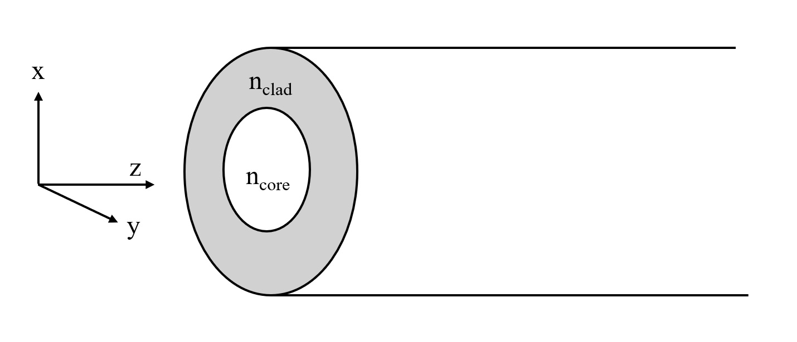

Propagation indipendent modes (PIM)#
CONDITION#
D=25um, \(\lambda\) =1550nm, NA=0.22

日本語#
STEP 1 — 伝搬定数 β とは何か？#
光ファイバーの中では、光は**モード(mode)**と呼ばれる特定の空間パターンで伝搬する。
各モードは固有の伝搬定数 \(\beta\) を持ち、これは軸方向(z 方向)に距離 \(z\) だけ進んだ際に位相が \(e^{i\beta z}\) だけ付加されることを意味する。
β の物理的意味#
自由空間での波数は \(k_0 = \omega/c\) である。
屈折率 \(n\) の均質媒質中では \(n k_0\) となる。
しかし光ファイバーはコア(屈折率 \(n_\text{core}\))とクラッド(屈折率 \(n_\text{clad}\), \(n_\text{clad} < n_\text{core}\))からなる導波構造であるため、光はその中間の有効屈折率で伝搬するように振る舞う。
この範囲外ではモードは存在しない。
\(\beta \geq n_\text{core} k_0\) の場合、コア全体で位相が揃ってしまい、伝搬解が存在しない。
\(\beta \leq n_\text{clad} k_0\) の場合、クラッド側が減衰しないため、エネルギーが無限に漏れ出す**放射モード(radiation mode)**となる。
つまり、両方の境界条件を同時に満たす \(\beta\) は離散的にのみ存在し、これが**導波モード(guided mode)**である。
STEP 2 — 横方向波数の定義#
伝搬定数 \(\beta\) が決まると、コア内部とクラッド内部での横断面方向の振る舞いを記述する二種類の波数を定義できる。
コア内部の横方向波数 \(\kappa\)#
コアの中では光は横断面方向に**振動(oscillation)**する。
\(k_0 n_\text{core}\) はコア内での全波数であり、そこから軸方向成分 \(\beta\) を引いた残りが横断面方向成分となる（ピタゴラス的なベクトル分解）。\(\kappa\) が実数になるためには \(\beta < k_0 n_\text{core}\) が必要で、これは上限条件と一致する。
クラッド内部の減衰定数 \(\sigma\)#
クラッドの中では光は振動する代わりに**指数関数的に減衰(evanescent)**する。
\(\sigma\) が実数になるためには \(\beta > k_0 n_\text{clad}\) が必要で、これは下限条件と一致する。
この両方の条件を満たす \(\beta\) の範囲においてのみ、完全導波モードが存在する。
STEP 3 — 規格化横方向波数 \(u\)、\(w\)#
数式を扱いやすくするため、コア半径 \(a\) で規格化した無次元波数を導入する。
この二量は次の関係を満たす。
ここで \(V\) は開口数(numerical aperture)とコア半径を合わせたV パラメーター（またはV 数）と呼ばれ、光ファイバーのモード数を決定する本質的な量である。
\(V < 2.405\) のとき、基本モード(HE\(_{11}\))のみが伝搬可能なシングルモードファイバーとなる。
STEP 4 — Bessel 関数の導関数表記#
境界条件を書く際に変形 Bessel 関数 \(K_l(r)\) の導関数がよく現れる。これを簡潔に表記するため、次の記号を導入する。
この定義が導関数と一致することを示すことができる。
なぜこのような漸化式が成り立つのか？
変形 Bessel 関数の漸化公式により、
が成り立つため、定義と一致する。この表記により、超越方程式中の \(K_l'\) を \(K_l\) と \(K_{l+1}\) の線形結合として表すことができ、数値計算が容易になる。
STEP 5 — 非対称パラメーター \(n_d\)、\(n_s\)#
コアとクラッドの屈折率の差を、二種類の組み合わせで定義する。
\(n_d\) はコアとクラッドの屈折率の差を表す非対称パラメーターであり、境界条件で電場と磁場の接線成分がどれだけ異なった結合をするかを反映する。
弱導波近似(\(n_\text{core} \approx n_\text{clad}\))のもとでは \(n_d \approx 0\) となり、数式が大幅に簡略化される。\(n_s\) は屈折率の平均に近い値であり、境界条件のスケールを調整する役割を担う。
STEP 6 — 補正項 \(R(\beta)\)#
\(R(\beta)\) はベクトル波動方程式から生じる偏光補正項であり、EH モードと HE モードを区別する鍵となる。
第一項 \(n_d^2[\cdots]^2\)：屈折率の不連続による偏光混合効果を表す。\(n_d\) が大きいほど（屈折率差が大きいほど）この項は大きくなる。
第二項：方位角次数 \(l\) と伝搬定数 \(\beta\) に依存する。\(l = 0\) のときこの項は消え、TE/TM モードのみが残る。
\(R(\beta)\) は常に正の実数であり、この値の符号を変えることで EH モードと HE モードの超越方程式を統一的に記述できる。
STEP 7 — 超越方程式と β の決定#
EH モードの超越方程式#
HE モードの超越方程式#
二つの方程式の違い#
二つの超越方程式の唯一の違いは最後の項の \(R(\beta)\) の符号である。
モード |
最後の項 |
意味 |
|---|---|---|
EH |
\(\frac{l}{u^2} - R(\beta)\) |
\(R(\beta)\) を引く方向への偏光補正 |
HE |
\(\frac{l}{u^2} + R(\beta)\) |
\(R(\beta)\) を加える方向への偏光補正 |
この符号の違いは、境界条件において電場の横方向成分がコアとクラッドの境界でどのように接続されるかに由来し、**電場が支配的なモード(EH)と磁場が支配的なモード(HE)**の構造上の違いを反映している。
β の数値的決定手順#
\(\beta \in (n_\text{clad} k_0,\; n_\text{core} k_0)\) の範囲を離散的に探索する。
\(f_{\mathrm{EH}}(\beta)\) または \(f_{\mathrm{HE}}(\beta)\) がゼロになる点を**符号変化(sign change)**で探す。
二分法(bisection)または Brent 法などで精密に収束させる。
各解 \(\beta_{lm}\)（方位角次数 \(l\)、径方向次数 \(m\)）に対応するモードプロファイルを構成する。
モード命名規則#
モード種別 |
説明 |
存在条件 |
|---|---|---|
TE\(_{0m}\) |
電場が横断面内のみに存在、\(l=0\) |
EH 方程式 \(l=0\) の特解 |
TM\(_{0m}\) |
磁場が横断面内のみに存在、\(l=0\) |
HE 方程式 \(l=0\) の特解 |
HE\(_{lm}\) |
磁場成分が優勢な混合モード |
HE 方程式 \(l \geq 1\) |
EH\(_{lm}\) |
電場成分が優勢な混合モード |
EH 方程式 \(l \geq 1\) |
基本モード HE\(_{11}\) は \(l=1\) の HE 方程式における \(m=1\) の最初の解であり、カットオフ周波数がゼロであるため、任意の V 数において常に存在する。
English#
STEP 1 — What Is the Propagation Constant β?#
Inside an optical fiber, light travels in specific spatial patterns called modes.
Each mode is characterized by a unique propagation constant \(\beta\), which encodes how the phase of the mode accumulates along the fiber: after propagating a distance \(z\) along the fiber axis, the mode acquires a phase factor \(e^{i\beta z}\).
Physical Meaning of β#
In free space, the wavenumber is \(k_0 = \omega/c\).
In a uniform medium with refractive index \(n\), it becomes \(n k_0\).
An optical fiber, however, is a waveguide structure consisting of a high-index core (\(n_\text{core}\)) surrounded by a lower-index cladding (\(n_\text{clad}\), with \(n_\text{clad} < n_\text{core}\)). Light in such a structure behaves as if it propagates with an intermediate effective refractive index, and \(\beta\) must satisfy:
Outside this range, no guided modes exist.
If \(\beta \geq n_\text{core} k_0\): the field would be uniform across the entire core with no transverse variation — no propagating solution exists.
If \(\beta \leq n_\text{clad} k_0\): the field in the cladding does not decay, and energy leaks out continuously — these are radiation modes.
Only discrete values of \(\beta\) simultaneously satisfy the boundary conditions at both the core–cladding interface and the requirement of evanescent decay in the cladding. These are the guided modes.
STEP 2 — Transverse Wave Numbers#
Once \(\beta\) is specified, the transverse behavior of the field inside the core and cladding can be described by two characteristic wave numbers.
Transverse Wave Number in the Core: \(\kappa\)#
Inside the core, the field oscillates in the transverse direction.
Here \(k_0 n_\text{core}\) is the total wave number inside the core. Subtracting the axial component \(\beta\) (in a Pythagorean vector decomposition) yields the transverse component. For \(\kappa\) to be real — a requirement for oscillatory behavior — we need \(\beta < k_0 n_\text{core}\), consistent with the upper bound.
Transverse Decay Constant in the Cladding: \(\sigma\)#
Inside the cladding, rather than oscillating, the field decays exponentially (evanescently).
For \(\sigma\) to be real — ensuring exponential decay rather than oscillation — we need \(\beta > k_0 n_\text{clad}\), consistent with the lower bound.
Only \(\beta\) values satisfying both conditions simultaneously support fully guided modes.
STEP 3 — Normalized Transverse Wave Numbers \(u\) and \(w\)#
To work with dimensionless quantities and simplify the transcendental equations, we normalize by the core radius \(a\):
These two quantities obey the important constraint:
where \(V\) is the V-number (or V-parameter, or normalized frequency), which combines the numerical aperture and the core radius. It determines how many modes a fiber supports.
When \(V < 2.405\), only the fundamental mode (HE\(_{11}\)) can propagate — this is the single-mode regime.
STEP 4 — Derivative Notation for Modified Bessel Functions#
When writing boundary conditions, the derivative of the modified Bessel function of the second kind, \(K_l(r)\), frequently appears. To keep the notation compact, we define:
This definition is equivalent to the derivative:
Why does this recurrence relation hold?
The modified Bessel function satisfies the recurrence identity:
which is a standard result from the theory of Bessel functions. This notation lets us express \(K_l'\) as a linear combination of \(K_l\) and \(K_{l+1}\), which are both well-tabulated and numerically stable, making computation more convenient.
STEP 5 — Asymmetry Parameters \(n_d\) and \(n_s\)#
The difference and average of the core and cladding refractive indices are captured in two dimensionless parameters:
\(n_d\) is the asymmetry parameter, quantifying the index contrast between core and cladding. It controls how strongly the tangential components of the electric and magnetic fields are coupled at the boundary. Under the weak guidance approximation (\(n_\text{core} \approx n_\text{clad}\)), \(n_d \approx 0\) and the equations simplify considerably.
\(n_s\) is close to the mean normalized index squared. It sets the overall scale of the cladding term in the boundary conditions and equals 1 in the limit \(n_\text{clad} \to 0\).
STEP 6 — The Polarization Correction Term \(R(\beta)\)#
\(R(\beta)\) arises from the vector nature of the electromagnetic wave equation. It is the key quantity that distinguishes EH modes from HE modes:
First term \(n_d^2[\cdots]^2\): Represents polarization mixing caused by the refractive index discontinuity at the core–cladding boundary. The larger the index contrast (larger \(n_d\)), the stronger this effect.
Second term: Depends on the azimuthal order \(l\) and the propagation constant \(\beta\). When \(l = 0\), this term vanishes entirely, leaving only the TE and TM modes.
\(R(\beta)\) is always a positive real number. The key insight is that the sign with which \(R(\beta)\) appears in the transcendental equation determines whether we are solving for EH or HE modes.
STEP 7 — Transcendental Equations and the Determination of β#
Transcendental Equation for EH Modes#
Transcendental Equation for HE Modes#
The Only Difference: Sign of \(R(\beta)\)#
The two equations are identical except for the sign preceding \(R(\beta)\) in the last term.
Mode |
Last Term |
Interpretation |
|---|---|---|
EH |
\(\frac{l}{u^2} - R(\beta)\) |
\(R(\beta)\) is subtracted — electric field dominant |
HE |
\(\frac{l}{u^2} + R(\beta)\) |
\(R(\beta)\) is added — magnetic field dominant |
This sign difference originates from how the tangential components of the electric field connect across the core–cladding boundary. It reflects the structural distinction between EH modes (where the electric field longitudinal component dominates) and HE modes (where the magnetic field longitudinal component dominates).
Numerical Procedure for Finding β#
Sweep \(\beta\) over the range \((n_\text{clad} k_0,\; n_\text{core} k_0)\) in discrete steps.
Identify sign changes in \(f_{\mathrm{EH}}(\beta)\) or \(f_{\mathrm{HE}}(\beta)\) — each sign change brackets one root.
Apply a root-finding algorithm (bisection, Brent’s method, Newton–Raphson) to converge on each root precisely.
Label each solution \(\beta_{lm}\) by its azimuthal order \(l\) and radial order \(m\), and construct the corresponding mode field profile.
Mode Nomenclature#
Mode Type |
Description |
Existence Condition |
|---|---|---|
TE\(_{0m}\) |
Transverse electric; electric field entirely in the cross-section, \(l=0\) |
EH equation, \(l=0\) special case |
TM\(_{0m}\) |
Transverse magnetic; magnetic field entirely in the cross-section, \(l=0\) |
HE equation, \(l=0\) special case |
HE\(_{lm}\) |
Hybrid mode with dominant magnetic field component |
HE equation, \(l \geq 1\) |
EH\(_{lm}\) |
Hybrid mode with dominant electric field component |
EH equation, \(l \geq 1\) |
The fundamental mode HE\(_{11}\) is the first root (\(m=1\)) of the HE equation for \(l=1\). Its cutoff frequency is zero, meaning it exists at any V-number and is always present in a fiber — this is why single-mode fibers are possible without completely eliminating all guidance.
한국어#
STEP 1 — 전파 상수 β란 무엇인가?#
광섬유 안에서 빛은 **모드(mode)**라는 특정한 공간 패턴으로 전파된다.
각 모드는 고유한 전파 상수 \(\beta\) 를 가지며, 이는 축 방향(z 방향)으로 거리 \(z\) 만큼 진행했을 때 위상이 \(e^{i\beta z}\) 만큼 추가됨을 의미한다.
β의 물리적 의미#
자유 공간에서 파수는 \(k_0 = \omega/c\) 이다.
굴절률 \(n\) 인 균질 매질 안에서라면 \(n k_0\) 가 된다.
그런데 광섬유는 코어(굴절률 \(n_\text{core}\))와 클래드(굴절률 \(n_\text{clad}\), \(n_\text{clad} < n_\text{core}\))로 이루어진 도파구조이므로, 빛은 그 중간 유효 굴절률로 전파하는 것처럼 행동한다.
이 범위 밖이면 모드는 존재하지 않는다.
\(\beta \geq n_\text{core} k_0\) 이면 코어 전체가 위상이 같아 버려 전파 해가 없다.
\(\beta \leq n_\text{clad} k_0\) 이면 클래드 쪽이 감쇠하지 않아 에너지가 무한히 빠져나가는 **방사 모드(radiation mode)**가 된다.
즉, 양쪽 경계 조건을 동시에 만족하는 \(\beta\) 는 이산적으로만 존재하고, 이것이 **전파 모드(guided mode)**다.
STEP 2 — 횡방향 파수의 정의#
전파 상수 \(\beta\) 가 정해지면, 코어 안과 클래드 안에서의 횡방향 거동을 기술하는 두 가지 파수를 정의할 수 있다.
코어 내부의 횡방향 파수 \(\kappa\)#
코어 안에서 빛은 횡단면 방향으로 **진동(oscillation)**한다.
\(k_0 n_\text{core}\) 는 코어 안에서의 전체 파수이고, 그것에서 축 방향 성분 \(\beta\) 를 빼면 나머지가 횡단면 방향 성분이다(피타고라스적으로 벡터 분해). \(\kappa\) 가 실수가 되려면 \(\beta < k_0 n_\text{core}\) 이어야 하며, 이는 앞서 나온 상한 조건과 일치한다.
클래드 내부의 감쇠 상수 \(\sigma\)#
클래드 안에서 빛은 진동하는 대신 **지수 함수적으로 감쇠(evanescent)**한다.
\(\sigma\) 가 실수가 되려면 \(\beta > k_0 n_\text{clad}\) 이어야 하며, 이는 하한 조건과 일치한다.
이 두 조건을 모두 만족하는 \(\beta\) 구간에서만 완전 도파 모드가 존재한다.
STEP 3 — 정규화된 횡방향 파수 \(u\), \(w\)#
수식을 다루기 편하게 코어 반경 \(a\) 로 정규화한 무차원 파수를 도입한다.
이 두 양은 다음과 같은 관계를 만족한다.
여기서 \(V\) 는 **수치 개구(numerical aperture)**와 코어 반경을 합친 V-파라미터 혹은 V-수라 하며, 광섬유의 모드 수를 결정하는 핵심 양이다.
\(V < 2.405\) 이면 오직 기본 모드(HE\(_{11}\))만 전파 가능한 단일 모드 섬유가 된다.
STEP 4 — Bessel 함수의 도함수 표기#
경계 조건을 쓸 때 변형 Bessel 함수 \(K_l(r)\) 의 도함수가 자주 등장한다. 이를 간결하게 표기하기 위해 다음 기호를 도입한다.
이 정의가 도함수와 같음을 보일 수 있다.
왜 이런 점화 관계가 성립하는가?
변형 Bessel 함수의 점화 공식에 의하면
이 성립하므로 정의와 일치한다. 이 표기를 통해 초월 방정식에서 \(K_l'\) 을 \(K_l\) 과 \(K_{l+1}\) 의 선형 결합으로 표현할 수 있어 수치 계산이 편리해진다.
STEP 5 — 비대칭 파라미터 \(n_d\), \(n_s\)#
코어와 클래드의 굴절률 차이를 두 가지 조합으로 정의한다.
\(n_d\) 는 코어와 클래드의 굴절률 차이를 나타내는 비대칭 파라미터로, 경계 조건에서 전계와 자계의 탄젠트 성분이 얼마나 다르게 결합하는지를 반영한다.
약 도파(weak guidance) 근사(\(n_\text{core} \approx n_\text{clad}\))에서는 \(n_d \approx 0\) 이 되어 수식이 단순해진다.\(n_s\) 는 굴절률의 평균에 가까운 값으로, 경계에서 경계 조건의 스케일을 조절하는 역할을 한다.
STEP 6 — 보정 항 \(R(\beta)\)#
\(R(\beta)\) 는 벡터 파동 방정식에서 발생하는 편광 보정 항으로, EH 모드와 HE 모드를 구분하는 핵심 역할을 한다.
첫 번째 항 \(n_d^2[\cdots]^2\): 굴절률 불연속에 의한 편광 혼합 효과를 나타낸다. \(n_d\) 가 클수록(굴절률 차이가 클수록) 이 항이 커진다.
두 번째 항: 각 방위각 차수 \(l\) 과 전파 상수 \(\beta\) 에 의존한다. \(l = 0\) 이면 이 항은 사라져 TE/TM 모드만 남는다.
\(R(\beta)\) 는 항상 양의 실수이며, 이 값의 부호를 달리 취함으로써 EH 모드와 HE 모드의 초월 방정식을 통일적으로 기술할 수 있다.
STEP 7 — 초월 방정식과 β의 결정#
EH 모드의 초월 방정식#
HE 모드의 초월 방정식#
두 방정식의 차이#
두 초월 방정식의 유일한 차이는 마지막 항의 \(R(\beta)\) 의 부호다.
모드 |
마지막 항 |
의미 |
|---|---|---|
EH |
\(\frac{l}{u^2} - R(\beta)\) |
\(R(\beta)\) 를 빼는 방향으로 편광 보정 |
HE |
\(\frac{l}{u^2} + R(\beta)\) |
\(R(\beta)\) 를 더하는 방향으로 편광 보정 |
이 부호 차이는 경계 조건에서 전계의 횡방향 성분이 코어와 클래드 경계에서 어떻게 이어지느냐에 따른 것으로, **전계가 주도하는 모드(EH)**와 **자계가 주도하는 모드(HE)**의 구조 차이를 반영한다.
β의 수치적 결정 방법#
\(\beta \in (n_\text{clad} k_0,\; n_\text{core} k_0)\) 범위를 이산적으로 탐색한다.
\(f_{\mathrm{EH}}(\beta)\) 또는 \(f_{\mathrm{HE}}(\beta)\) 가 0이 되는 점을 부호 변환(sign change) 으로 찾는다.
이분법(bisection) 또는 Brent’s method 등으로 정밀하게 수렴시킨다.
각 해 \(\beta_{lm}\) (방위각 차수 \(l\), 반경 방향 차수 \(m\))에 대응하는 모드 프로파일을 구성한다.
모드 명명 규칙#
모드 종류 |
설명 |
존재 조건 |
|---|---|---|
TE\(_{0m}\) |
전계가 횡단면 내에만 있음, \(l=0\) |
EH 방정식 \(l=0\) 특수해 |
TM\(_{0m}\) |
자계가 횡단면 내에만 있음, \(l=0\) |
HE 방정식 \(l=0\) 특수해 |
HE\(_{lm}\) |
자계 성분이 우세한 혼합 모드 |
HE 방정식 \(l \geq 1\) |
EH\(_{lm}\) |
전계 성분이 우세한 혼합 모드 |
EH 방정식 \(l \geq 1\) |
기본 모드 HE\(_{11}\) 은 \(l=1\) 의 HE 방정식에서 \(m=1\) 에 해당하는 첫 번째 해이며, 차단 주파수가 0이므로 어떤 V-수에서도 항상 존재한다.